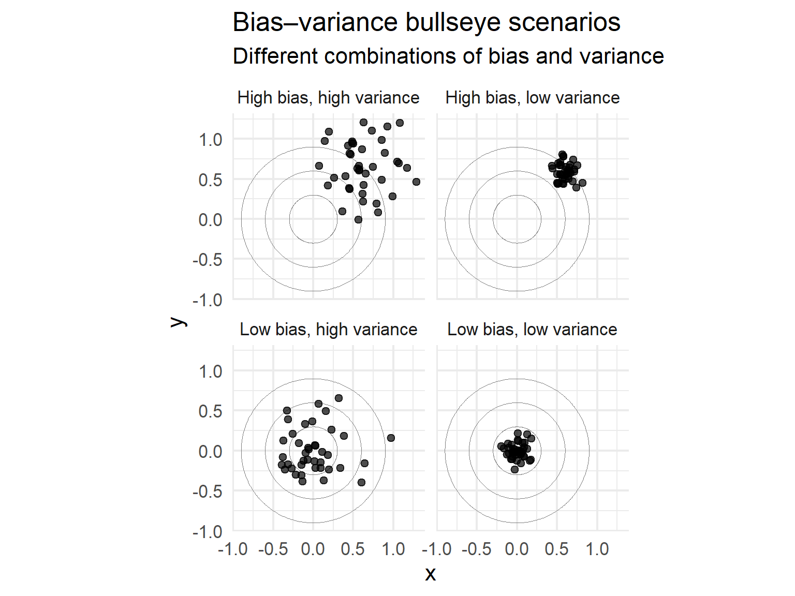
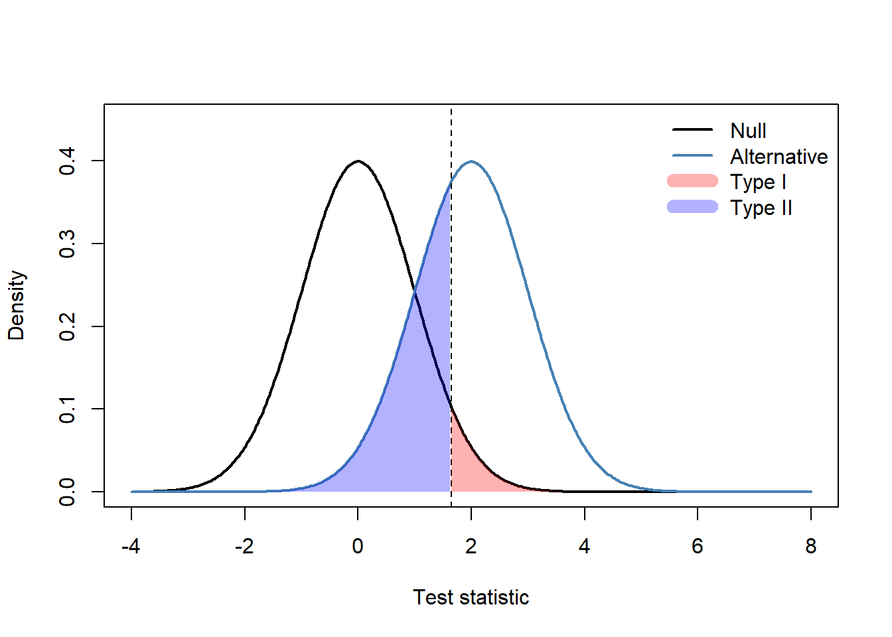
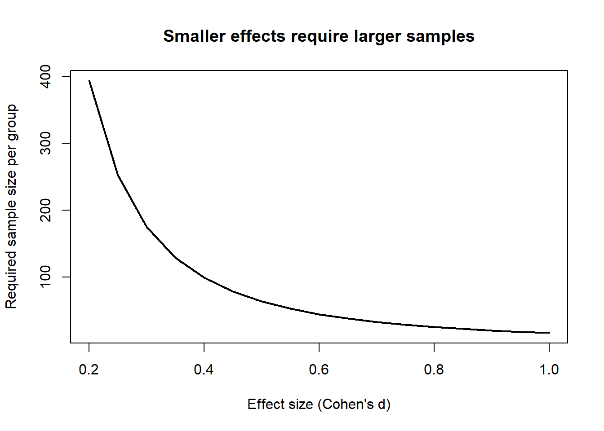
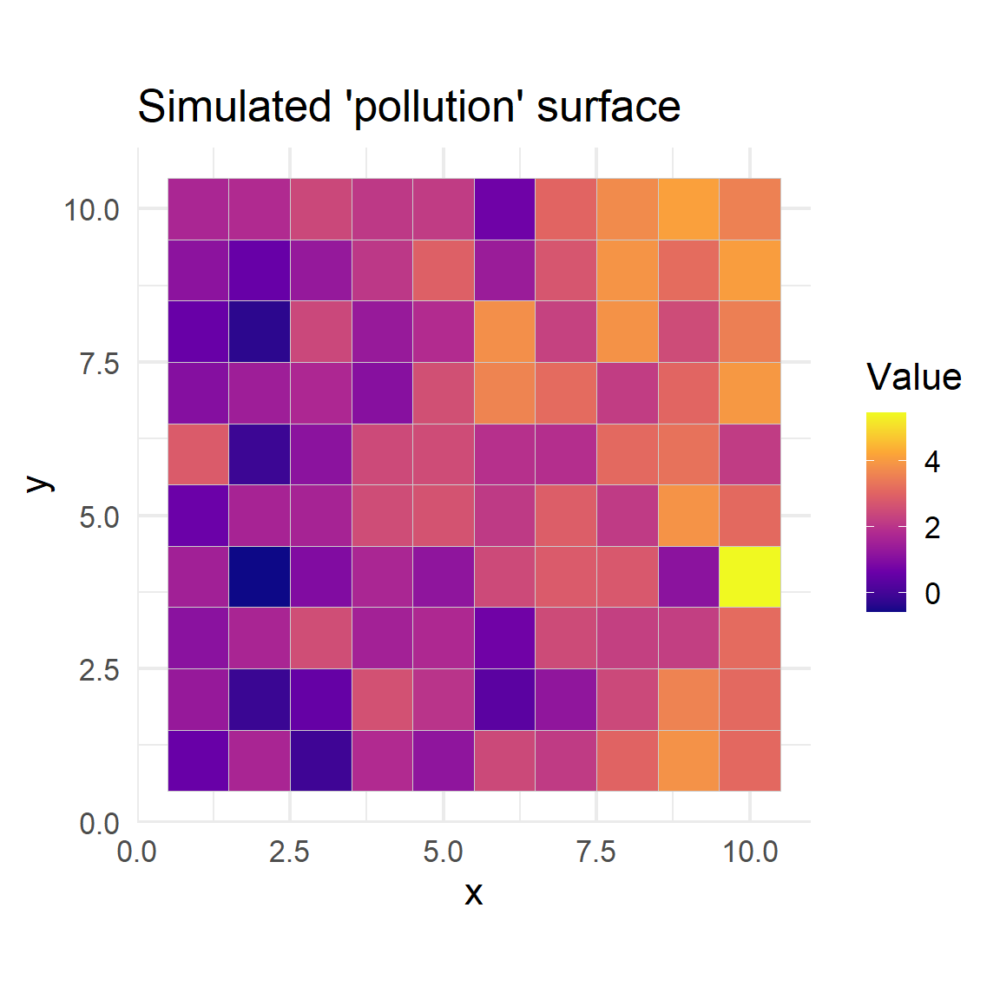
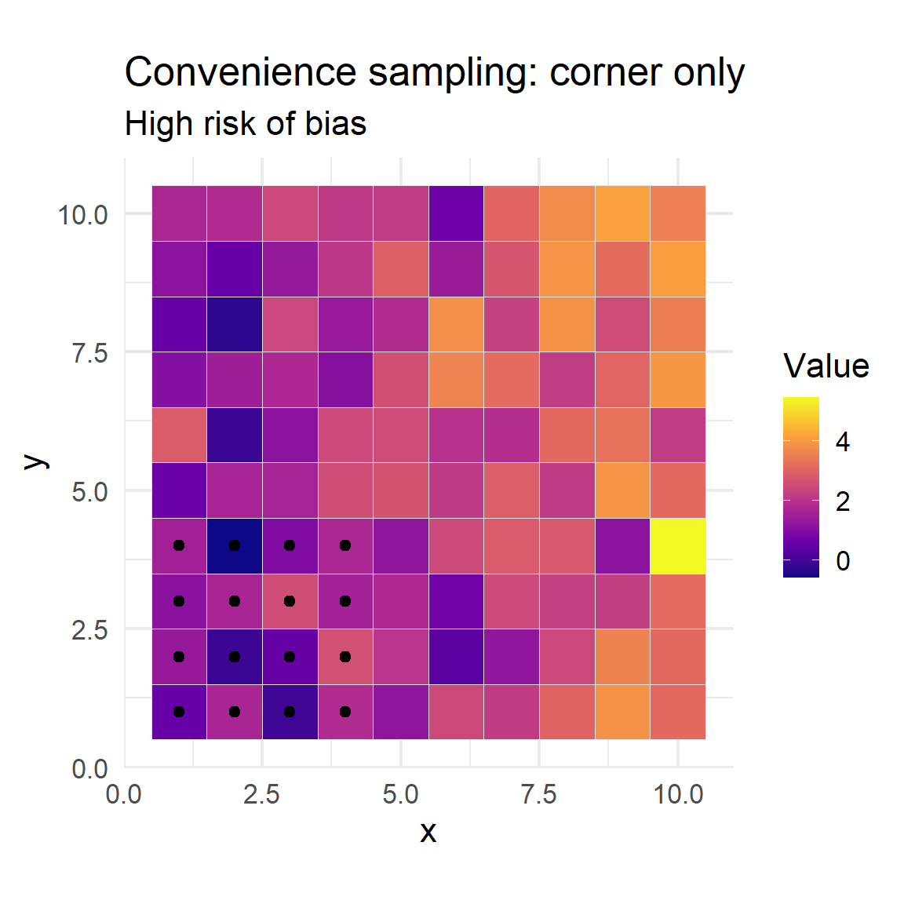
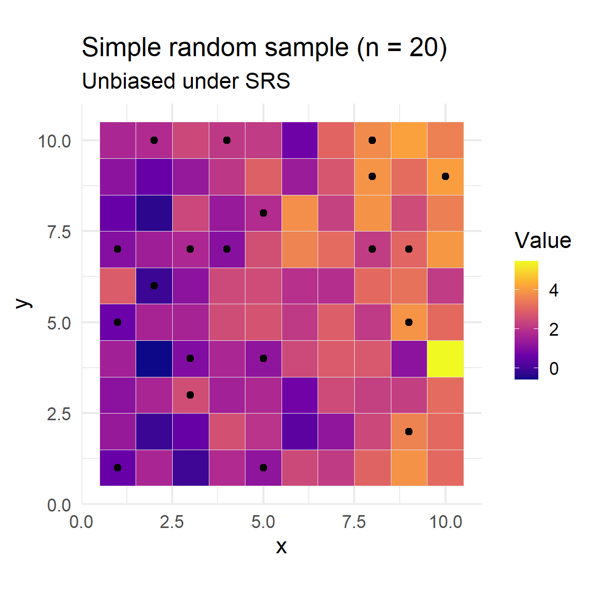
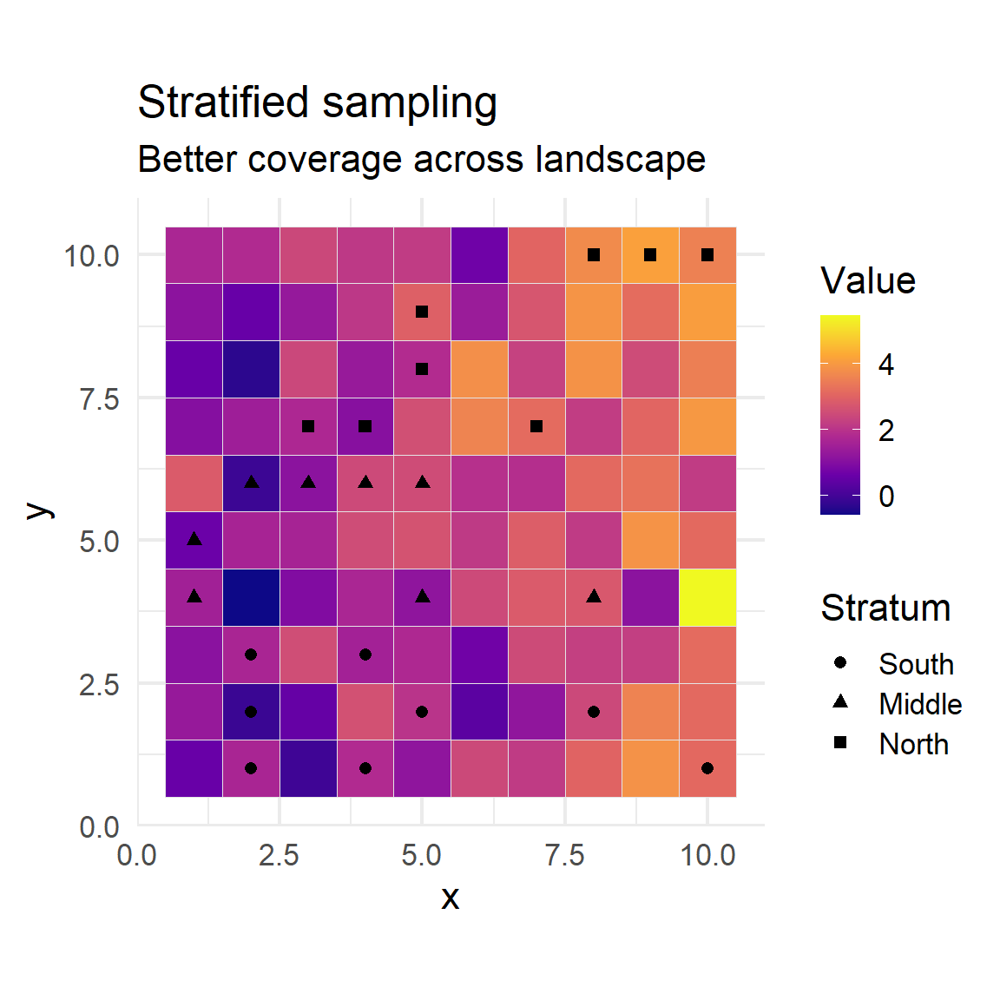
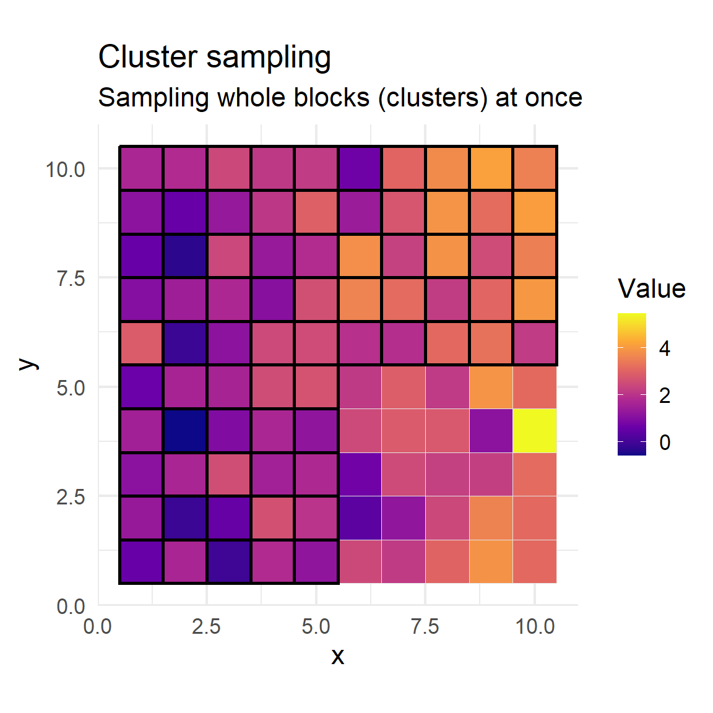
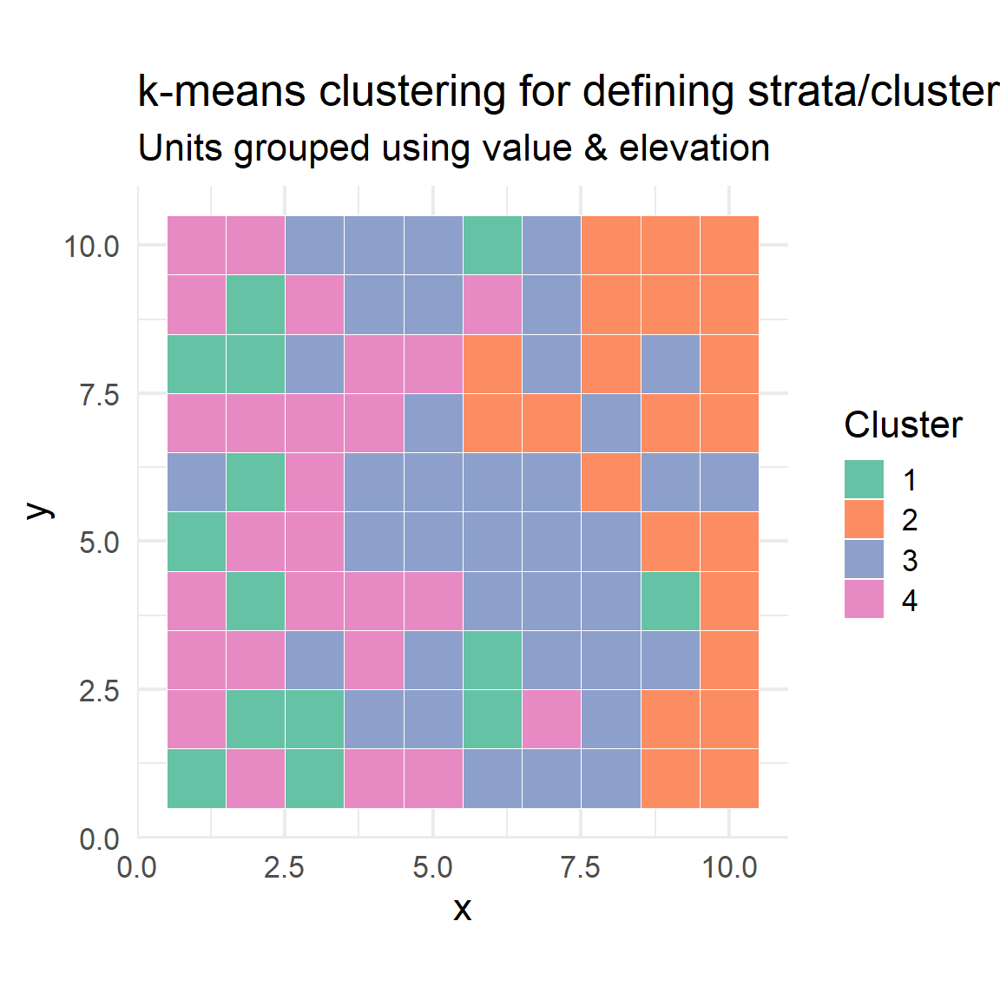

Implement convenience, random, stratified, and cluster sampling
Visualise what our samples “look like” in space
Part 1 – Bias & variance
Intuition via a bullseye metaphor
How bias and variance trade off
Why both matter for sampling and estimation
Bias vs variance – intuition
Imagine we are throwing darts at a bullseye.
The true value is the centre of the target.
Each dart is an estimate (e.g. mean from a sample).
We care about two things:
Bias: Are our darts systematically off-centre?
Variance: Are our darts tightly clustered or widely spread?
Ideally: low bias & low variance
→ darts tightly clustered around the centre.
Bullseye scenarios

Bias–variance bullseye plots
Part 2 – Sampling theory
How inference depends on your sampling design
Design-based vs model-based thinking
Error, power, and effect size
Design-based vs model-based inference
Design-based inference: randomness comes from the sampling design (e.g., SRS, stratified, cluster).
Estimators are justified by randomization; validity does not rely on a strong model for the population.
Model-based inference: treat the population as a realization of a statistical model (e.g., spatial regression, Gaussian field).
Inference is conditional on the model being approximately correct.
In practice, design-based approaches are robust but can be inefficient, while model-based approaches can be very efficient but fragile if the model is wrong.
Many modern surveys use a hybrid strategy: a good probability design plus a model to improve precision.
Typical sampling designs (conceptual)
Simple random sampling (SRS): every unit has equal chance; conceptually simple, design-based gold standard.
Stratified sampling: partition the population into strata and sample within each; improves precision and ensures coverage.
Cluster sampling: sample whole groups (clusters) of nearby units; cheaper logistically but with larger sampling error.
How do we decide on a sample size?
Determining how many samples you need is as fundamental as choosing where they should come from. In environmental science, sample size influences cost, effort, accuracy, and the credibility of your conclusions.
Sample size is driven by four quantities:
Effect size: What is the smallest meaningful difference or pattern you want to detect?
Variance: How noisy is the underlying process? More variance → larger n.
Significance level (α): Probability of a Type I error (false positive).
Power (1 − β): Probability of correctly detecting a true effect.
Type I and Type II errors
Type I error (α)
A false positive — concluding an effect exists when it does not. We usually choose α = 0.05.
Type II error (β)
A false negative — failing to detect a real effect. Power = 1 − β measures how likely we are to detect the effect.
Typical scientific studies aim for 80% power, meaning β = 0.20.

Type I and II error regions
Example: Power analysis in R
Below is an example power calculation for a two-sample t‑test when the effect size varies.
library(pwr)effects <-seq(0.2, 1, by =0.05)res <-sapply(effects, function(d) pwr.t.test(d = d, power =0.8, sig.level =0.05, type ="two.sample")$n)plot(effects, res, type ="l", lwd =2,xlab ="Effect size (Cohen's d)",ylab ="Required sample size per group",main ="Smaller effects require larger samples")

Required sample size as a function of effect size
Practical guidance
Effect size thinking matters: trivial differences do not justify massive sampling campaigns.
More variance → more samples: noisy ecological processes require deeper sampling.
Design-based sampling controls bias; model-based approaches may be more efficient if the model is correct.
Alpha and power trade-offs must be justified, not chosen arbitrarily.
Summary so far – theory
We now have: - A conceptual grounding in bias and variance - A working picture of design-based vs model-based inference - An overview of common designs: SRS, stratified, cluster - Theoretical tools for sample size, effect size, and Type I / II errors.
Next we’ll see how these ideas play out in spatial sampling in R.
Part 3 – Spatial sampling in R
Build a simple grid-based study region
Compare convenience, random, stratified, and cluster designs
Visualise how design affects spatial coverage and bias
Spatial example – create a study region in R

Simulated study region (grid)
Convenience sampling
Convenience sampling selects units that are easiest to reach or access, rather than using random or systematic selection.
This approach is often quick and low-cost, relying on availability rather than a defined sampling plan.
It does not ensure that every member of the population has a chance of selection, introducing selection bias.
As a result, the sample may not be representative, and findings may not generalize to the broader population.
In environmental studies, examples include sampling near roads, field stations, or other easily accessible sites.

Convenience sample in the bottom-left area
Simple random sampling (SRS)
Simple Random Sampling (SRS) is a method where every unit in the population has an equal and independent chance of being selected.
SRS does not consider spatial, temporal, or group structure—samples are chosen uniformly from the entire sampling frame.
This approach is easy to implement and provides unbiased estimates as long as all units are accessible.
It may be inefficient in populations with strong spatial structure or gradients, potentially missing some areas entirely.
SRS requires a complete list of all units and may not be practical when access or sampling is logistically constrained.
n_srs <-20srs_sample <- grid |>sample_n(n_srs)ggplot() +geom_tile(data = grid, aes(x, y, fill = value), color ="grey90") +geom_point(data = srs_sample, aes(x, y), color ="black", size =2) +scale_fill_viridis_c(option ="C") +coord_equal() +labs(title =paste0("Simple random sample (n = ", n_srs, ")"), subtitle ="Unbiased under SRS", fill ="Value")

Simple random sample
Stratified sampling
Stratified sampling divides the population into distinct subgroups (strata) based on important characteristics (such as habitat, region, or demographic group).
Samples are randomly selected from within each stratum, ensuring that all segments of the population are represented in the final sample.
Improves precision of estimates, especially when there is substantial difference between strata but more similarity within each stratum.
The number of samples from each stratum can be proportional to its size or allocated equally, depending on study goals.
Analysis must account for stratification by appropriately weighting or aggregating results across strata to produce unbiased population-level estimates.
grid_strat <- grid |>mutate(stratum =cut( y,breaks =c(0, 3.33, 6.66, 10.1),labels =c("South", "Middle", "North") ) )n_per_stratum <-8strat_sample <- grid_strat |>group_by(stratum) |>sample_n(n_per_stratum) |>ungroup()ggplot() +geom_tile(data = grid_strat, aes(x, y, fill = value), color ="grey90") +geom_point(data = strat_sample, aes(x, y, shape = stratum), color ="black", size =2) +scale_fill_viridis_c(option ="C") +coord_equal() +labs(title ="Stratified sampling", subtitle ="Better coverage across landscape", fill ="Value", shape ="Stratum")

Stratified sampling by north/south bands
Cluster sampling
Cluster sampling groups the population into clusters (e.g., spatial blocks, villages, or schools) that are often based on natural or convenient divisions.
Randomly selects entire clusters, then samples all (or a subset of) units within those chosen clusters, rather than drawing from the population at large.
Reduces cost and logistical effort, since sampling is concentrated in a small number of locations, making it practical for widely dispersed populations.
Works best when clusters are similar to each other but internally heterogeneous, so that each selected cluster is representative of the whole population.
Statistical analysis must account for the cluster structure, as observations within clusters may be more alike—this increases sampling error compared to simple random sampling.

Cluster sampling using 5×5 blocks
How are clusters and strata created?
Clusters and strata are groupings of population units, but they differ in purpose and how they are created.
Clusters: Groups of units sampled together—often to reduce cost/logistics.
Strata: Groups of units that are internally similar, used to ensure groups are represented in the sample.
The definition of clusters or strata can greatly impact the results of sampling—so, how do we create them?
Judgemental (Subjective) Approaches
Expert knowledge: Clusters or strata are defined by people who know the study area well (e.g., separating neighbourhoods by known boundaries, land use, or socio-economic status).
Administrative boundaries: Using counties, postal codes, schools, etc.
Pro: Fast and accessible; uses existing groupings.
Con: Can introduce bias, as groupings may not reflect underlying variation.
Model-based & Data-driven Approaches
Use of auxiliary data (e.g., satellite data, previous surveys, environmental layers) to identify groups that are similar or different.
Spatial models: Delineate regions based on predicted values from spatial models (e.g., soil properties, health metrics).
Pro: Can tailor clusters/strata to variation in the variable of interest.
Con: Requires sufficient, relevant data and analysis.
Statistical Methods – Example: k-means Clustering
k-means is an algorithm that partitions units into (k) clusters so that units within a cluster are more similar to each other than to those in other clusters.
Steps:
Specify number of clusters ((k)).
Randomly assign initial cluster centers.
Assign each unit to the nearest center.
Update centers and repeat until stable.
Application: Often used to create clusters or strata using continuous auxiliary variables (e.g., income, environmental gradients).

Creating strata/clusters using k-means clustering on two variables
Comparison: Choosing a Method
Judgemental methods: Simple, transparent, but can miss important variation.
Model-based groupings: Potentially more representative, but require good covariate data.
Statistical clustering (e.g., k-means): Objective, reproducible, works for multi-variate data, but needs careful selection of variables.
The best approach depends on your study’s goals, available data, and logistical constraints.